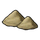

Run 4c623702
Maps
One frame per save.
Population
Who lives where, and how many have work.
World population by pop type
Every location's pops, summed per save. Peasants with a job (farms, RGOs, buildings) are Peasants; peasants without one live off subsistence farming (Subsistence peasants).
Population by world region
Population of each world region (EU5 sub-continent; ocean and river-navigation pseudo-regions left out). Growth per year is the average yearly rate between two saves.
Unemployment
Subsistence peasants (peasants without a job) as a share of all people, world and per world region.
Trade
What moved between markets and what did not: the routes and the trade balance of every market as videos, then trade per goods group, per good and per market.
World trade
Goods imported by markets from other markets, valued at base prices (gold per month), by goods group; the imported share is imports ÷ (production + imports) of all markets together.

What was traded and what was not
Per good and save. Imported share: imports ÷ (production + imports) of all markets. Unmet demand: demand no market could supply (Σ max(0, demand − supply) ÷ Σ demand). Markets short: supply below 90 % of demand; in surplus: producing and supply above 110 % of demand. A good with markets short and markets in surplus at the same time is one trade does not carry.
Trade between world regions
Goods moved by the trade routes that ran, summed per world region (the region of each market's centre), gold per month at base prices. Exports and imports count only trade with other regions; inside is trade between markets of the same region. Net = exports − imports.
World regions: trade in and out
Every world region of the save: what it sent to and received from other regions, trade inside it, its main goods and partners (gold per month at base prices).
Flows between world regions
Every pair of world regions that traded, exporter to importer, with the goods that made up the flow.
Markets
Every market of the save: what it produced, imported and exported (gold per month at base prices; main goods with their value), how much of its supply came from other markets and how much demand nothing covered. Click a column to sort; pick another save above the table.
Goods
Every good of the save (units per month): world production and use, price, how much markets imported, demand nothing covered, how many markets were short or in surplus, and the markets that exported, imported or lacked it most.
Largest trade routes
The 150 largest routes of the save by value at base price (amount moved per month).
Prices
Every good's price against its base price, and whether the world uses more than it makes.
Prices of every good
World price of each good (markets weighted by traded volume) as a multiple of its base price; red = dearer, blue = cheaper. Goods grouped (the coloured bar: farming, mining, gathering/hunting/forestry, manufactured), the most produced first; hover a cell or an icon for the name. Mod bookkeeping goods (offset, logistics, province food, labour) are left out.
Prices, use and production by goods group
Price index: price ÷ base of every good, weighted by its world use at base price. Use ÷ production: what pops, buildings, construction and armies take (without trade between markets) against what is produced; above 1 the world uses more than it makes (stocks run down, prices climb). Production at base prices.
Buildings
Building levels and what they cost to build.
Building levels by category
All building levels, grouped by the game's building category (largest nine, the rest as other).
Building investment
What the standing buildings cost to build at the location's prices (list price divided by max(0.5, 1 + the location's building efficiency)); level n costs price × (1 + increase per level × (n − 1)), today's mod prices, no country-wide cost modifiers. Added: change against the first save (negative: levels lost to destruction, downgrades or obsolete buildings).
Building investment per capita
Building investment at the location's prices (list price divided by max(0.5, 1 + the location's building efficiency)) per 1,000 people, world and world regions.
Countries
The largest countries by population and by income.
Largest countries by population
The ten most populous countries at the last save and every country that was among the three largest at any save (population of the locations they own; subjects count on their own).
Largest countries by income
Monthly income of the ten richest countries at the last save and every country that was among the three richest at any save. Per million people: income ÷ population (the in-game GDP per capita idea).
Largest countries
The 60 most populous countries of the save. Income and expense are the last month's.